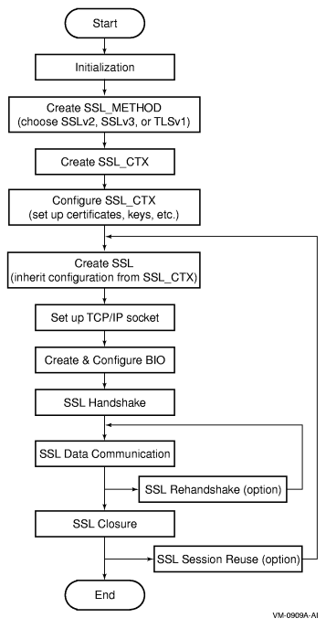

<!DOCTYPE html PUBLIC "-//W3C//DTD HTML 4.01 Transitional//EN" "http://www.w3.org/TR/html4/loose.dtd">
<html lang="en-us"><head>
<meta http-equiv="content-type" content="text/html; charset=ISO-8859-1">
<script language="JavaScript" src="ch04s03_files/bread.js"></script>
  <title>
   SSL Programming Tutorial
  </title>
  <meta http-equiv="Content-Style-Type" content="text/css">
  <meta name="hp_design_version" content="hpweb.1.2a">
  <meta name="web_section_id" content="R307">
<meta name="document_title" content="HP Open Source Security for OpenVMS Volume 2: HP SSL for OpenVMS">
<meta name="mpn" content="">
<meta name="pub_date" content="July 2006">
<meta name="description" content="SSL Programming Concepts -- HP Open Source Security for OpenVMS Volume 2: HP SSL for OpenVMS, HP Part Number '', Publication Date 'July 2006'">
<meta name="keywords" content="Certificate, TCP/IP connection, Handshake, Certificate, Data transmission, Handshake, ">
<meta name="collection" content="">
<meta name="ct" content="">
<meta name="rt" content="">
<meta name="ROBOTS" content="ALL">

  <script type="text/javascript" language="JavaScript"><!--
        var theme = '#EB5F01';

          var stylePath = "style/5_0/";

      //--></script>
  <script type="text/javascript" language="JavaScript" src="ch04s03_files/hpweb_utilities.js"></script><link rel="stylesheet" type="text/css" href="ch04s03_files/hpweb_styles_mac.css"><style type="text/css">
.themeheader {color:#FFFFFF; font-weight:bold;}

.themeheaderA {color:#FFFFFF; font-weight:bold; font-size: 140%;}

.leveld {font-weight: bold; border-bottom: solid 2px #EB5F01; margin: 0px 0px 0px 0px; padding:1px;}
.themebody {color:#FFFFFF;}

a.themeheaderlink {font-weight: bold; color:#FFFFFF; text-decoration: none;}
a.themeheaderlink:active {font-weight: bold; color:#FFFFFF;}
a.themeheaderlink:link {font-weight: bold; color:#FFFFFF;}
a.themeheaderlink:visited {font-weight: bold; color:#FFFFFF;}
a.themeheaderlink:hover {text-decoration: underline;}

a.themelink {color:#FFFFFF; text-decoration: none;}
a.themelink:active {color:#FFFFFF;}
a.themelink:link {color:#FFFFFF;}
a.themelink:visited {color:#FFFFFF;}
a.themelink:hover {text-decoration: underline;}

a.themebodylink {color:#FFFFFF; text-decoration: underline;}
a.themebodylink:active {color:#FFFFFF;}
a.themebodylink:link {color:#FFFFFF;}
a.themebodylink:visited {color:#FFFFFF;}

.theme {background: #EB5F01}
</style>
  <link rel="stylesheet" type="text/css" href="ch04s03_files/hpweb_doc.css">
<link rel="stylesheet" type="text/css" href="ch04s03_files/hpweb_locale_overrides.css">

<script language="JavaScript" src="ch04s03_files/openvms10.js"></script></head>
        

		

        
<body class="colorFFFFFFbg" leftmargin="0" topmargin="0" link="#003366" marginheight="0" marginwidth="0" text="#000000" vlink="#660066" alink="#003366">
<!--stopindex-->
<!-- Begin Top Navigation Area -->
<table width="740" border="0" cellpadding="0" cellspacing="0">
	<tbody><tr class="decoration">
		<td width="10"><a href="#jumptocontent"></a><noscript>
<a href="http://welcome.hp.com/country/us/en/noscript.html">summary of site-wide JavaScript functionality</a></noscript></td>
		<td class="smallbold" width="260" align="left"><!-- Welcome, 123456789012345678901234567890... --></td>
		<td></td>
		<td class="color003366" width="155" align="left">
</td>
		<td class="countryInd" width="285" align="right">United States-English</td>
		<td></td>
	</tr>
</tbody></table>
<table width="100%" border="0" cellpadding="0" cellspacing="0">
	<tbody><tr>
		<td valign="top" align="left" bgcolor="#666666">
			<table width="720" border="0" cellpadding="0" cellspacing="0">
				<tbody><tr class="decoration">
					<td><a href="http://welcome.hp.com/country/us/en/welcome.html"></a></td>
					<td class="colorE7E7E7bg"></td>
					<td><a href="http://welcome.hp.com/country/us/en/prodserv.html"></a></td>
					<td class="colorE7E7E7bg"></td>
					<td><a href="http://welcome.hp.com/country/us/en/support.html"></a></td>
					<td class="colorE7E7E7bg"></td>
					<td><a href="http://welcome.hp.com/country/us/en/solutions.html"></a></td>
					<td class="colorE7E7E7bg"></td>
					<td><a href="http://welcome.hp.com/country/us/en/howtobuy.html"></a></td>
					<td class="colorE7E7E7bg"></td>
				</tr>
			</tbody></table>
		</td>
	</tr>
</tbody></table>
<!-- End Top Navigation Area -->
<!-- Begin Search Area -->
<table width="100%" border="0" cellpadding="0" cellspacing="0">
	<tbody><tr>
		<td valign="top" align="left" bgcolor="#E7E7E7">
			<table width="740" border="0" cellpadding="0" cellspacing="0">
				<tbody><tr>
					<td valign="top" width="20"></td>
					<td class="color003366bld" valign="middle" width="150" align="left">»&nbsp;<a href="http://www.hp.com/country/us/en/contact_us.html" class="smallbld">Contact HP</a></td>
					<td width="570" align="right"><form action="http://www.hp.com/search/" method="GET" name="hpsearch" id="hpsearch">
<input name="ctry" value="us" type="hidden">
<input name="lk" value="1" type="hidden">
<input name="uf" value="0" type="hidden">
<input name="lang" value="eng" type="hidden">
<input name="hps" value="HP OpenVMS systems" type="hidden">
<input name="hpn" value="Return to the HP OpenVMS systems site" type="hidden">
<input name="qp" value="site:h71000.www7.hp.com url:h71028.www7.hp.com/ERC -wizard" type="hidden">
<input name="hpr" value="http://h71000.www7.hp.com/" type="hidden">
<input name="hpa" value="http://welcome.hp.com/country/us/en/contact_us.html" type="hidden">
<input name="hpo" value="hphqglobal,hphqWWesg,hphqbcs,hphqopenvms" type="hidden">
<input name="hpc" value="1" type="hidden">
						<table align="right" border="0" cellpadding="0" cellspacing="0">
							<tbody><tr class="decoration">
								<td colspan="4"></td>
							</tr>
							<tr>
								<td class="bold" align="left"><label for="textbox1">Search:</label></td>
								<td valign="top"></td>
								<td valign="top" align="left">
<input name="qt" size="26" maxlength="1991" id="textbox1" alt="Enter search criteria here" type="text">
<a id="country" onmouseover="status='search using the specified criteria';return true;" onmouseout="status='';return true;" onfocus="status='search using the specified criteria';return true;" onblur="status='';return true;">


<input name="submit" src="ch04s03_files/hpweb_1-2_arrw_sbmt.gif" alt="Begin your search" onclick='s_linkType="o";s_linkName="OpenVMS-Search-"+document.location+"-("+hpsearch.qt.value+")";s_lnk=s_co(this);s_gs("hphqopenvms");' type="Image" border="0"></a></td>
								<td align="left"></td>
							</tr>
							<tr>
								<td></td>
								<td colspan="3" class="small" align="left"><div><!--BEGIN SEARCH HPL TAG -->
<input value="1" name="hpl" checked="checked" class="srchradbtn" id="sectionRadio" type="radio"><label for="sectionRadio"><span class="bold">HP OpenVMS Systems</span></label>
<input value="0" name="hpl" id="countryRadio" class="srchradbtn" type="radio"><label for="countryRadio">All of HP</label><!-- END SEARCH HPL TAG --></div></td>
							</tr>
						</tbody></table></form>
					</td>
				</tr>
			</tbody></table>
		</td>
	</tr>
</tbody></table>
<!-- End Search Area -->
<!--startindex-->
<!-- Begin Page Title Area -->
<table width="740" border="0" cellpadding="0" cellspacing="0">
	<tbody><tr>
		<td valign="middle" width="170" align="center"><a href="http://welcome.hp.com/country/us/en/welcome.html"></a><br></td>
		<td width="10"></td>
		<td valign="top" width="560" align="left">
		<script language="JavaScript">breadcrumbs()</script><a href="http://welcome.hp.com/country/us/eng/prodserv/software.html" class="udrlinesmall">Software</a>&nbsp; <span class="color666666">&gt;</span> &nbsp;<a href="http://h71000.www7.hp.com/" class="udrlinesmall">OpenVMS Systems</a>  &gt; <a href="http://h71000.www7.hp.com/doc/" class="udrlinesmall">Documentation</a> &gt; <a href="http://h71000.www7.hp.com/doc/83final/" class="udrlinesmall">83final</a> &gt; <a href="http://h71000.www7.hp.com/doc/83final/ba554_90007/" class="udrlinesmall">ba554_90007</a> <br>


<h1>HP OpenVMS Systems Documentation</h1></td>
<!--stopindex-->
	</tr>
</tbody></table>
<!-- End Page Title Area -->
<!-- Begin Left Navigation and Content Area.  To increase width of content area modify width of table below. -->
<table width="740" border="0" cellpadding="0" cellspacing="0">
	<tbody><tr>
<!-- Begin Gutter Cell 10px Wide -->
		<td valign="top" width="10"><a name="jumptocontent"></a></td>
<!-- End Gutter Cell 10px Wide -->
<!--startindex-->
<!-- Start Content Area.  To increase width of content area, modify width of table cell below. -->
		<td valign="top" width="730" align="left">
<!-----hpOpenVMSContentStart----->
 
<table><!-- Start Content Area.  To increase width of content area, modify width of table cell below. --><tbody><tr>
    <td valign="top" width="560" align="left">
      <a href="http://h71000.www7.hp.com/doc/83final/ba554_90007/index.html" class="udrlinesmall">HP Open Source Security for OpenVMS Volume 2: HP SSL for OpenVMS</a>&nbsp;<span class="color666666">&gt;</span>&nbsp;<a href="http://h71000.www7.hp.com/doc/83final/ba554_90007/ch04.html" class="udrlinesmall">Chapter&nbsp;4&nbsp;SSL Programming Concepts</a><br>
      
      <h1>
      SSL Programming Tutorial
      </h1>
      <table width="560" border="0" cellpadding="0" cellspacing="0"><tbody><tr><td class="color666666bg" align="center"><h2 class="colorFFFFFFbld" title="Table of Contents">&nbsp;»&nbsp;<a href="http://h71000.www7.hp.com/doc/83final/ba554_90007/index.html" class="colorFFFFFFbld">Table of Contents</a></h2></td><td class="color666666bg" valign="top" width="5"></td><td width="2">[</td><td class="color666666bg" align="center"><h2 class="colorFFFFFFbld" title="Index">&nbsp;»&nbsp;<a href="http://h71000.www7.hp.com/doc/83final/ba554_90007/ix01.html" class="colorFFFFFFbld">Index</a></h2></td><td class="color666666bg" valign="top" width="5"></td><td></td></tr></tbody></table>
      <div class="navheader"><table summary="Navigation header" width="540" border="0" cellpadding="0" cellspacing="0"><tbody><tr><td></td><td></td><td></td></tr><tr class="decoration"><td colspan="3" height="1" bgcolor="#cccccc"></td></tr><tr class="decoration"><td colspan="3" height="4" bgcolor="#ffffff"></td></tr><tr><td valign="top" width="40%" align="left"><form action="ch04s02.html" method="get" name="prev"><input class="primButton" value="«&nbsp;prev" name="btnPrev" type="submit"></form>
          &nbsp;
        </td><th width="20%" align="center">
          &nbsp;
        </th><td valign="top" width="40%" align="right"><form action="ch05.html" method="get" name="next"><input class="primButton" value="next&nbsp;»" name="btnNext" type="submit"></form>
          &nbsp;
        </td></tr></tbody></table></div>
      <div class="section" lang="en"><div class="titlepage"><div><div></div></div><div></div></div><p>This section demonstrates the implementation of a simple SSL
client and server program using OpenSSL APIs.</p><p>Although SSL client and server programs might differ in their
setup and configuration, their common internal procedures can be
summarized in <a href="http://h71000.www7.hp.com/doc/83final/ba554_90007/ch04s03.html#ssl-app-fig" title="Figure&nbsp;4-8&nbsp; Overview of SSL Application with OpenSSL
APIs">Figure&nbsp;4-8&nbsp;&#8220; Overview of SSL Application with OpenSSL
APIs&#8221;</a>. These
procedures are discussed in the following sections. </p><div class="figure"><a name="ssl-app-fig"></a><p class="title"><b>Figure&nbsp;4-8&nbsp; Overview of SSL Application with OpenSSL
APIs</b></p><div><table width="100%"><tbody><tr><td></td></tr></tbody></table></div></div><div class="section" lang="en"><div class="titlepage"><div><div><table width="100%" border="0" cellpadding="0" cellspacing="1"><tbody><tr><td valign="top" align="left"><a name="d0e3087"></a><h3 class="bold"><span class="levelc">Initializing the SSL Library</span></h3></td></tr><tr class="decoration"><td class="theme"></td></tr></tbody></table></div></div><div></div></div><p>Before you can call any other OpenSSL APIs in the SSL application
programs, you must perform initialization using the following SSL
APIs. </p><table><tbody><tr><td></td></tr></tbody></table><table width="100%" bgcolor="#E0E0E0" border="0"><tbody><tr><td><code><pre class="programlisting">SSL_library_init(); /* load encryption &amp; hash algorithms for SSL */                <br>SSL_load_error_strings(); /* load the error strings for good error reporting */</pre></code></td></tr></tbody></table><table><tbody><tr><td></td></tr></tbody></table><p>The <tt class="function">SSL_library_init</tt>() API registers all ciphers and hash algorithms used in
SSL APIs. The encryption algorithms loaded with this API are DES-CBC,
DES-EDE3-CBC, RC2 and RC4 (IDEA and RC5 are not available in HP
SSL for OpenVMS); and the hash algorithms are MD2, MD5, and SHA.
The <tt class="function">SSL_library_init</tt>() API has a return value that is always 1 (integer). </p><p>SSL applications should call the <tt class="function">SSL_load_error_strings</tt>() API. This API loads error strings for SSL APIs as well
as for Crypto APIs. Both SSL and Crypto error strings need to be
loaded because many SSL applications call some Crypto APIs as well
as SSL APIs. </p></div><div class="section" lang="en"><div class="titlepage"><div><div><table width="100%" border="0" cellpadding="0" cellspacing="1"><tbody><tr><td valign="top" align="left"><a name="d0e3109"></a><h3 class="bold"><span class="levelc">Creating and Setting Up the SSL Context Structure
(SSL_CTX) </span></h3></td></tr><tr class="decoration"><td class="theme"></td></tr></tbody></table></div></div><div></div></div><p>The first step after the intialization is to choose an SSL/TLS
protocol version. Do this by creating an <tt class="literal">SSL_METHOD</tt> structure
with one of the following APIs. The <tt class="literal">SSL_METHOD</tt> structure
is then used to create an <tt class="literal">SSL_CTX</tt> structure with
the <tt class="function">SSL_CTX_new</tt>() API.</p><p>For every SSL/TLS version, there are three types of APIs to
create an <tt class="literal">SSL_METHOD</tt> structure: one for both client
and server, one for server only, and one for client only. SSLv2,
SSLv3, and TLSv1 APIs correspond with the same name protocols. <a href="http://h71000.www7.hp.com/doc/83final/ba554_90007/ch04s03.html#tab2" title="Table&nbsp;4-2&nbsp; Types of APIs for SSL_METHOD Creation">Table&nbsp;4-2&nbsp;&#8220; Types of APIs for SSL_METHOD Creation&#8221;</a> shows the types of APIs.</p><div class="topbottom"><a name="tab2"></a><p class="title"><b>Table&nbsp;4-2&nbsp; Types of APIs for SSL_METHOD Creation</b></p><table summary=" Types &#65533;&#65533;&#65533;[of APIs for SSL_METHOD Creation" style="border-collapse: collapse; border-top: 0.5pt solid rgb(153, 153, 153); border-bottom: 0.5pt solid rgb(153, 153, 153);" border="0" cellpadding="4" cellspacing="1"><colgroup><col width="100"><col width="164"><col width="203"><col width="203"></colgroup><tbody><tr style="border-bottom: 0.5pt solid rgb(153, 153, 153);"><td style="border-bottom: 0.5pt solid rgb(153, 153, 153);"><em class="firstterm-docmaker">Protocol type</em></td><td style="border-bottom: 0.5pt solid rgb(153, 153, 153);"><em class="firstterm-docmaker">For combined client and
server</em></td><td style="border-bottom: 0.5pt solid rgb(153, 153, 153);"><em class="firstterm-docmaker">For a dedicated server </em></td><td style="border-bottom: 0.5pt solid rgb(153, 153, 153);"><em class="firstterm-docmaker">For a dedicated client </em></td></tr><tr style="border-bottom: 0.5pt solid rgb(153, 153, 153);"><td style="">SSLv2</td><td style=""><tt class="function">SSLv2_method</tt>()</td><td style=""><tt class="function">SSLv2_server_ method</tt>()</td><td style=""><tt class="function">SSLv2_client_ method</tt>()</td></tr><tr style="border-bottom: 0.5pt solid rgb(153, 153, 153);"><td style="">SSLv3</td><td style=""><tt class="function">SSLv3_method</tt>()</td><td style=""><tt class="function">SSLv3_server_ method</tt>()</td><td style=""><tt class="function">SSLv3_client_ method</tt>()</td></tr><tr style="border-bottom: 0.5pt solid rgb(153, 153, 153);"><td style="">TLSv1</td><td style=""><tt class="function">TLSv1_method</tt>()</td><td style=""><tt class="function">TLSv1_server_ method</tt>()</td><td style=""><tt class="function">TLSv1_client_ method</tt>()</td></tr><tr><td style="">SSLv23</td><td style=""><tt class="function">SSLv23_method</tt>()</td><td style=""><tt class="function">SSLv23_server_ method</tt>()</td><td style=""><tt class="function">SSLv23_client_ method</tt>()</td></tr></tbody></table></div><para>&nbsp;</para><table width="100%" border="0" cellpadding="0" cellspacing="1"><tbody><tr><td></td></tr><tr class="decoration"><td nowrap="nowrap" height="3" bgcolor="#ffffff"></td><td nowrap="nowrap" height="3" bgcolor="#CCCCCC"></td></tr><tr><td colspan="2" height="1"></td></tr><tr><td nowrap="nowrap" valign="top" width="50" align="center"></td><td width="100%"><b>NOTE: </b>There is no SSL protocol version named SSLv23. The <tt class="function">SSLv23_method</tt>() API and its variants choose SSLv2, SSLv3, or TLSv1 for
compatibility with the peer.</td></tr><tr><td colspan="2" height="1"></td></tr><tr class="decoration"><td nowrap="nowrap" height="1" bgcolor="#ffffff"></td><td nowrap="nowrap" height="1" bgcolor="#CCCCCC"></td></tr><tr><td></td></tr></tbody></table><p>Consider the incompatibility among the SSL/TLS versions when
you develop SSL client/server applications. For example, a TLSv1
server cannot understand a client-hello message from an SSLv2 or
SSLv3 client. The SSLv2 client/server recognizes messages from only
an SSLv2 peer. The <tt class="function">SSLv23_method</tt>() API and its variants may be used when the compatibility
with the peer is important. An SSL server with the SSLv23 method
can understand any of the SSLv2, SSLv3, and TLSv1 hello messages.
However, the SSL client using the SSLv23 method cannot establish
connection with the SSL server with the SSLv3/TLSv1 method because SSLv2
hello message is sent by the client. </p><p>The <tt class="function">SSL_CTX_new</tt>() API takes the <tt class="literal">SSL_METHOD</tt> structure
as an argument and creates an <tt class="literal">SSL_CTX</tt> structure. </p><p>In the following example, an <tt class="literal">SSL_METHOD</tt> structure
that can be used for either an SSLv3 client or SSLv3 server is created
and passed to <tt class="function">SSL_CTX_new</tt>(). The <tt class="literal">SSL_CTX</tt> structure is initialized
for SSLv3 client and server. </p><table><tbody><tr><td></td></tr></tbody></table><table width="100%" bgcolor="#E0E0E0" border="0"><tbody><tr><td><code><pre class="programlisting">meth = SSLv3_method();<br>ctx = SSL_CTX_new(meth);</pre></code></td></tr></tbody></table><table><tbody><tr><td></td></tr></tbody></table></div><div class="section" lang="en"><div class="titlepage"><div><div><table width="100%" border="0" cellpadding="0" cellspacing="1"><tbody><tr><td valign="top" align="left"><a name="d0e3240"></a><h3 class="bold"><span class="levelc">Setting Up the Certificate and Key</span></h3></td></tr><tr class="decoration"><td class="theme"></td></tr></tbody></table></div></div><div></div></div><p><a href="http://h71000.www7.hp.com/doc/83final/ba554_90007/ch04s02.html" title="Certificates for
SSL Applications">&#8220;Certificates for
SSL Applications&#8221;</a> discussed how
the SSL client and server programs require you to set up appropriate
certificates. This setup is done by loading the certificates and
keys into the <tt class="literal">SSL_CTX</tt> or SSL structures. The
mandatory and optional certificates are as follows:
</p><div><ul class="primarybullet"><li><div class="listitembody"><p class="list-initial">For the SSL server:</p><table class="simplelist" summary="Simple list" border="0"><tbody><tr><td>Server's own certificate (mandatory)</td></tr><tr><td>CA certificate (optional) </td></tr></tbody></table></div></li><li><div class="listitembody"><p class="list-initial">For the SSL client:</p><table class="simplelist" summary="Simple list" border="0"><tbody><tr><td>CA certificate (mandatory)</td></tr><tr><td>Client's own certificate (optional)</td></tr></tbody></table></div></li></ul></div>=<div class="section" lang="en"><div class="titlepage"><div><div><a name="d0e3266"></a><h4><span class="leveld">Loading a Certificate (Client/Server Certificate)</span></h4></div></div><div></div></div><p>Use the <tt class="function">SSL_CTX_use_certificate_file</tt>() API to load a certificate into an <tt class="literal">SSL_CTX</tt> structure.
Use the <tt class="function">SSL_use_certificate_file</tt>() API to load a certificate into an <tt class="literal">SSL</tt> structure.
When the <tt class="literal">SSL</tt> structure is created, the <tt class="literal">SSL</tt> structure
automatically loads the same certificate that is contained in the <tt class="literal">SSL_CTX</tt> structure. Therefore,
you onlyneed to call the <tt class="function">SSL_use_certificate_file</tt>() API for the <tt class="literal">SSL</tt> structure only if
it needs to load a different certificate than the default certificate
contained in the <tt class="literal">SSL_CTX</tt> structure.<a class="indexterm" name="d0e3301"></a></p></div><div class="section" lang="en"><div class="titlepage"><div><div><a name="d0e3306"></a><h4><span class="leveld">Loading a Private Key</span></h4></div></div><div></div></div><p>The next step is to set a private key that corresponds to
the server or client certificate. In the SSL handshake, a certificate
(which contains the public key) is transmitted to allow the peer
to use it for encryption. The encrypted message sent from the peer
can be decrypted only using the private key. You must preload the private
key that was created with the public key into the <tt class="literal">SSL</tt> structure. </p><p>The following APIs load a private key into an <tt class="literal">SSL</tt> or <tt class="literal">SSL_CTX</tt> structure: </p><div><ul class="primarybullet"><li><div class="listitembody"><p class="list-initial"><tt class="function">SSL_CTX_use_PrivateKey</tt>()</p></div></li><li><div class="listitembody"><p class="list-initial"><tt class="function">SSL_CTX_use_PrivateKey_ASN1</tt>()</p></div></li><li><div class="listitembody"><p class="list-initial"><tt class="function">SSL_CTX_use_PrivateKey_file</tt>()</p></div></li><li><div class="listitembody"><p class="list-initial"><tt class="function">SSL_CTX_use_RSAPrivateKey</tt>()</p></div></li><li><div class="listitembody"><p class="list-initial"><tt class="function">SSL_CTX_use_RSAPrivateKey_ASN1</tt>()</p></div></li><li><div class="listitembody"><p class="list-initial"><tt class="function">SSL_CTX_use_RSAPrivateKey_file</tt>()</p></div></li><li><div class="listitembody"><p class="list-initial"><tt class="function">SSL_use_PrivateKey</tt>()</p></div></li><li><div class="listitembody"><p class="list-initial"><tt class="function">SSL_use_PrivateKey_ASN1</tt>()</p></div></li><li><div class="listitembody"><p class="list-initial"><tt class="function">SSL_use_PrivateKey_file</tt>()</p></div></li><li><div class="listitembody"><p class="list-initial"><tt class="function">SSL_use_RSAPrivateKey</tt>()</p></div></li><li><div class="listitembody"><p class="list-initial"><tt class="function">SSL_use_RSAPrivateKey_ASN1</tt>()</p></div></li><li><div class="listitembody"><p class="list-initial"><tt class="function">SSL_use_RSAPrivateKey_file</tt>()</p></div></li></ul></div></div><div class="section" lang="en"><div class="titlepage"><div><div><a name="d0e3371"></a><h4><span class="leveld">Loading a CA Certificate</span></h4></div></div><div></div></div><p>To verify a certificate, you must first load a CA certificate
(because the peer certificate is verified against a CA certificate).
The <tt class="function">SSL_CTX_load_verify_locations</tt>() API loads a CA certificate into the <tt class="literal">SSL_CTX</tt> structure. </p><p>The prototype of this API is as follows: </p><table><tbody><tr><td></td></tr></tbody></table><table width="100%" bgcolor="#E0E0E0" border="0"><tbody><tr><td><code><pre class="programlisting">int SSL_CTX_load_verify_locations(SSL_CTX *ctx, const char *CAfile, <br>const char *CApath);</pre></code></td></tr></tbody></table><table><tbody><tr><td></td></tr></tbody></table><p>The first argument, <tt class="literal">ctx</tt>, points to an <tt class="literal">SSL_CTX</tt> structure
into which the CA certificate is loaded. The second and third arguments, <tt class="literal">CAfile</tt> and <tt class="literal">CApath</tt>,
are used to specify the location of the CA certificate. When looking up
CA certificates, the OpenSSL library first searches the certificates
in <tt class="literal">CAfile</tt>, then those in <tt class="literal">CApath</tt>.</p><p>The following rules apply to the <tt class="literal">CAfile</tt> and <tt class="literal">CApath</tt> arguments: </p><div><ul class="primarybullet"><li><div class="listitembody"><p class="list-initial">If the certificate is specified by <tt class="literal">CAfile</tt> (the
certificate must exist in the same directory as the SSL application),
specify NULL for <tt class="literal">CApath</tt>. </p></div></li><li><div class="listitembody"><p class="list-initial">To use the third argument, <tt class="literal">CApath</tt>,
specify NULL for <tt class="literal">CAfile</tt>. You must also hash the
CA certificates in the directory specified by <tt class="literal">CApath</tt>.
Use the Certificate Tool (described in Chapter 3) to perform the
hashing operation.</p></div></li></ul></div></div><div class="section" lang="en"><div class="titlepage"><div><div><a name="d0e3438"></a><h4><span class="leveld">Setting Up Peer Certificate Verification </span></h4></div></div><div></div></div><p>The CA certificate loaded in the <tt class="literal">SSL_CTX</tt> structure
is used for peer certificate verification. For example, peer certificate
verification on the SSL client is performed by checking the relationships
between the CA certificate (loaded in the SSL client) and the server
certificate. </p><p>For successful verification, the peer certificate must be
signed with the CA certificate directly or indirectly (a proper
certificate chain exists). The certificate chain length from the
CA certificate to the peer certificate can be set in the <tt class="literal">verify_depth</tt> field
of the <tt class="literal">SSL_CTX</tt>and <tt class="literal">SSL</tt> structures.
(The value in <tt class="literal">SSL</tt> is inherited from <tt class="literal">SSL_CTX</tt> when
you create an <tt class="literal">SSL</tt> structure using the <tt class="function">SSL_new</tt>() API). Setting <tt class="literal">verify_depth</tt> to 1 means
that the peer certificate must be directly signed by the CA certificate. </p><p>The <tt class="function">SSL_CTX_set_verify</tt>() API allows you to set the verification flags in the <tt class="literal">SSL_CTX</tt> structure
and a callback function for customized verification as its third
argument. (Setting NULL to the callback function means the built-in
default verification function is used.) In the second argument of <tt class="function">SSL_CTX_set_verify</tt>(), you can set the following macros:</p><div><ul class="primarybullet"><li><div class="listitembody"><p class="list-initial"><tt class="literal">SSL_VERIFY_NONE</tt></p></div></li>ì<li><div class="listitembody"><p class="list-initial"><tt class="literal">SSL_VERIFY_PEER</tt></p></div></li><li><div class="listitembody"><p class="list-initial"><tt class="literal">SSL_VERIFY_FAIL_IF_NO_PEER_CERT</tt></p></div></li><li><div class="listitembody"><p class="list-initial"><tt class="literal">SSL_VERIFY_CLIENT_ONCE</tt></p></div></li></ul></div><p>The <tt class="literal">SSL_VERIFY_PEER</tt> macro can be used on
both SSL client and server to enable the verification. However, the
subsequent behaviors depend on whether the macro is set on a client
or a server. For example: </p><table><tbody><tr><td></td></tr></tbody></table><table width="100%" bgcolor="#E0E0E0" border="0"><tbody><tr><td><code><pre class="programlisting">/* Set a callback function (verify_callback) for peer certificate */<br>/* verification */<br>SSL_CTX_set_verify(ctx, SSL_VERIFY_PEER, verify_callback);<br>/* Set the verification depth to 1 */<br>SSL_CTX_set_verify_depth(ctx,1);</pre></code></td></tr></tbody></table><table><tbody><tr><td></td></tr></tbody></table><p>You can verify a peer certificate in another, less common
way - by using the <tt class="function">SSL_get_verify_result</tt>() API. This method allows you to obtain the peer certificate
verification result without using the <tt class="function">SSL_CTX_set_verify</tt>() API.</p><p>Call the following two APIs <em>before</em> you
call the <tt class="function">SSL_get_verify_result</tt>() API: </p><div class="orderedlist"><ol type="1"><li><p class="list-initial">Call <tt class="function">SSL_connect</tt>() (in the client) or <tt class="function">SSL_accept</tt>() (in the server) to perform the SSL handshake. Certificate
verification is performed during the handshake. <tt class="function">SSL_get_verify_result</tt>() cannot obtain the result before the verification process. </p></li><li><p class="list-initial">Call <tt class="function">SSL_get_peer_certificate</tt>() to explicitly obtain the peer certificate. The <tt class="literal">X509_V_OK</tt> macro
value is returned when a peer certificate is not presented as well
as when the verification succeeds. </p></li></ol></div><p>The following code shows how to use <tt class="function">SSL_get_verify_result</tt>() in the SSL client: </p><table><tbody><tr><td></td></tr></tbody></table><table width="100%" bgcolor="#E0E0E0" border="0"><tbody><tr><td><code><pre class="programlisting"> SSL_CTX_set_verify_depth(ctx, 1);<br>     err = SSL_connect(ssl);<br> if(SSL_get_peer_certificate(ssl) != NULL)<br>      {<br>         if(SSL_get_verify_result(ssl) == X509_V_OK)</pre></code></td></tr></tbody></table><table><tbody><tr><td></td></tr></tbody></table><table><tbody><tr><td></td></tr></tbody></table><table width="100%" bgcolor="#E0E0E0" border="0"><tbody><tr><td><code><pre class="programlisting">     BIO_printf(bio_c_out, "client verification with SSL_get_verify_result() <br>      succeeded.\n");                <br>         else{<br> <br>            BIO_printf(bio_err, "client verification with SSL_get_verify_result() <br>      failed.\n");<br> <br>           exit(1);<br>          }<br>      }<br>  else<br>      BIO_printf(bio_c_out, -the peer certificate was not presented.\n-);</pre></code></td></tr></tbody></table><table><tbody><tr><td></td></tr></tbody></table></div><div class="section" lang="en"><div class="titlepage"><div><div><a name="d0e3592"></a><h4><span class="leveld">Example 1: Setting Up Certificates for the
SSL Server</span></h4></div></div><div></div></div><p>The SSL protocol requires that the server set its own certificate
and key. If you want the server to conduct client authentication
with the client certificate, the server must load a CA certificate
so that it can verify the client-s certificate.</p><p>The following example shows how to set up certificates for
the SSL server: </p><table><tbody><tr><td></td></tr></tbody></table><table width="100%" bgcolor="#E0E0E0" border="0"><tbody><tr><td><code><pre class="programlisting"> /* Load server certificate into the SSL context */<br>               if (SSL_CTX_use_certificate_file(ctx, SERVER_CERT, <br>         SSL_FILETYPE_PEM) &lt;= 0) } </pre></code></td></tr></tbody></table><table><tbody><tr><td></td></tr></tbody></table><table><tbody><tr><td></td></tr></tbody></table><table width="100%" bgcolor="#E0E0E0" border="0"><tbody><tr><td><code><pre class="programlisting">                        ERR_print_errors(bio_err);  /* == <br>                  ERR_print_errors_fp(stderr); */<br>                     exit(1);<br>            }<br> <br>               /* Load the server private-key into the SSL context */<br>             if (SSL_CTX_use_PrivateKey_file(ctx, SERVER_KEY, <br>          SSL_FILETYPE_PEM) &lt;= 0) {</pre></code></td></tr></tbody></table><table><tbody><tr><td></td></tr></tbody></table><table><tbody><tr><td></td></tr></tbody></table><table width="100%" bgcolor="#E0E0E0" border="0"><tbody><tr><td><code><pre class="programlisting">                   ERR_print_errors(bio_err);  /* == <br>                  ERR_print_errors_fp(stderr); */<br>                     exit(1);<br>            }<br> <br>/* Load trusted CA. */<br>            if (!SSL_CTX_load_verify_locations(ctx,CA_CERT,NULL)) { <br>                    ERR_print_errors(bio_err);  /* == <br>                  ERR_print_errors_fp(stderr); */<br>                     exit(1);<br>            }<br> <br>               /* Set to require peer (client) certificate verification */<br>                SSL_CTX_set_verify(ctx, SSL_VERIFY_PEER, verify_callback);<br>          /* Set the verification depth to 1 */<br>               SSL_CTX_set_verify_depth(ctx,1);<br></pre></code></td></tr></tbody></table><table><tbody><tr><td></td></tr></tbody></table></div><div class="section" lang="en"><div class="titlepage"><div><div><a name="d0e3654"></a><h4><span class="leveld">Example 2: Setting Up Certificates for the
SSL Client</span></h4></div></div><div></div></div><p>Generally, the SSL client verifies the server certificate
in the process of the SSL handshake. This verification requires
the SSL client to set up its trusting CA certificate. The server
certificate must be signed with the CA certificate loaded in the
SSL client in order for the server certificate verification to succeed.</p><p>The following example shows how to set up certificates for
the SSL client: </p><table><tbody><tr><td></td></tr></tbody></table><table width="100%" bgcolor="#E0E0E0" border="0"><tbody><tr><td><code><pre class="programlisting">/*----- Load a client certificate into the SSL_CTX structure -----*/<br>       if(SSL_CTX_use_certificate_file(ctx,CLIENT_CERT,<br>       SSL_FILETYPE_PEM) &lt;= 0){<br>                    ERR_print_errors_fp(stderr);<br>                exit(1);<br>            }<br> <br>/*----- Load a private-key into the SSL_CTX structure -----*/<br>        if(SSL_CTX_use_PrivateKey_file(ctx,CLIENT_KEY,<br>        SSL_FILETYPE_PEM) &lt;= 0){<br>                    ERR_print_errors_fp(stderr);<br>                exit(1);<br>            }<br> <br>/* Load trusted CA. */<br>            if (!SSL_CTX_load_verify_locations(ctx,CA_CERT,NULL)) {<br>                     ERR_print_errors_fp(stderr);<br>                    exit(1);<br>            }</pre></code></td></tr></tbody></table><table><tbody><tr><td></td></tr></tbody></table></div></div><div class="section" lang="en"><div class="titlepage"><div><div><table width="100%" border="0" cellpadding="0" cellspacing="1"><tbody><tr><td valign="top" align="left"><a name="create-ssl-struct-sect"></a><h3 class="bold"><span class="levelc">Creating and Setting
Up the SSL Structure </span></h3></td></tr><tr class="decoration"><td class="theme"></td></tr></tbody></table></div></div><div></div></div><p>Call <tt class="function">SSL_new</tt>() to create an <tt class="literal">SSL</tt> structure. Information
for an SSL connection is stored in the <tt class="literal">SSL</tt> structure. The
protocol for the <tt class="function">SSL_new</tt>() API is as follows: </p><table><tbody><tr><td></td></tr></tbody></table><table width="100%" bgcolor="#E0E0E0" border="0"><tbody><tr><td><code><pre class="programlisting">ssl = SSL_new(ctx);</pre></code></td></tr></tbody></table><table><tbody><tr><td></td></tr></tbody></table><p>A newly created <tt class="literal">SSL</tt> structure inherits
information from the <tt class="literal">SSL_CTX</tt> structure. This
information includes types of connection methods, options, verification
settings, and timeout settings. No additional settings are required
for the <tt class="literal">SSL</tt> structure if the appropriate initialization
and configuration have been done for the <tt class="literal">SSL_CTX</tt> structure. </p><p>You can modify the default values in the <tt class="literal">SSL</tt> structure
using SSL APIs. To do this, use variants of the APIs that set attributes
of the <tt class="literal">SSL_CTX</tt> structure. For example, you can
use <tt class="function">SSL_CTX_use_certificate</tt>() to load a certificate into an <tt class="literal">SSL_CTX</tt> structure,
and you can use <tt class="function">SSL_use_certificate</tt>() to load a certificate into an <tt class="literal">SSL</tt> structure. </p></div><div class="section" lang="en"><div class="titlepage"><div><div><table width="100%" border="0" cellpadding="0" cellspacing="1"><tbody><tr><td valign="top" align="left"><a name="set-up-tcpip-sect"></a><h3 class="bold"><span class="levelc">Setting Up the TCP/IP
Connection</span></h3></td></tr><tr class="decoration"><td class="theme"></td></tr></tbody></table></div></div><div></div></div><p>Although SSL works with some other reliable protocols, TCP/IP
is the most common transport protocol used with SSL.</p><a class="indexterm" name="d0e3757"></a><p>The following sections describe how to set up TCP/IP for the
SSL APIs. This configuration is the same as in many other TCP/IP
client/server application programs; it is not specific to SSL API
applications. In these sections, TCP/IP is set up with the ordinary
socket APIs, although it is also possible to use OpenVMS system services.</p><div class="section" lang="en"><div class="titlepage"><div><div><a name="d0e3764"></a><h4><span class="leveld">Creating and Setting Up the Listening Socket
(on the SSL Server)</span></h4></div></div><div></div></div><p>The SSL server needs two sockets as an ordinary TCP/IP server&#8212;one
for the SSL connection, the other for detecting an incoming connection
request from the SSL client. </p><p>In the following code, the <tt class="function">socket</tt>() function creates a listening socket. After the address
and port are assigned to the listening socket with <tt class="function">bind</tt>(), the <tt class="function">listen</tt>() function allows the listening socket to handle an incoming
TCP/IP connection request from the client.</p><table><tbody><tr><td></td></tr></tbody></table><table width="100%" bgcolor="#E0E0E0" border="0"><tbody><tr><td><code><pre class="programlisting"> listen_sock = socket(PF_INET, SOCK_STREAM, IPPROTO_TCP);<br> CHK_ERR(listen_sock, "socket");<br> <br> memset(<tt class="literal">&amp;</tt>sa_serv, 0, sizeof(sa_serv));<br> sa_serv.sin_family      = AF_INET;<br> sa_serv.sin_addr.s_addr = INADDR_ANY;<br> sa_serv.sin_port        = htons(s_port);      /* Server Port number */<br> <br> err = bind(listen_sock, (struct sockaddr*)<tt class="literal">&amp;</tt>sa_serv,sizeof(sa_serv));<br> CHK_ERR(err, "bind");<br> <br> /* Receive a TCP connection. */<br> err = listen(listen_sock, 5);<br> CHK_ERR(err, "listen");</pre></code></td></tr></tbody></table><table><tbody><tr><td></td></tr></tbody></table></div><div class="section" lang="en"><div class="titlepage"><div><div><a name="d0e3814"></a><h4><span class="leveld">Creating and Setting Up the Socket (on the
SSL Client) </span></h4></div></div><div></div></div><p>On the client, you must create a TCP/IP socket and attempt
to connect to the server with this socket. To establish a connection
to the specified server, the TCP/IP <tt class="function">connect</tt>() function is used. If the function succeeds, the socket
passed to the <tt class="function">connect</tt>() function as a first argument can be used for data communication
over the connection. </p><table><tbody><tr><td></td></tr></tbody></table><table width="100%" bgcolor="#E0E0E0" border="0"><tbody><tr><td><code><pre class="programlisting"> sock = socket(AF_INET, SOCK_STREAM, IPPROTO_TCP);<br> CHK_ERR(sock, "socket");</pre></code></td></tr></tbody></table><table><tbody><tr><td></td></tr></tbody></table><table><tbody><tr><td></td></tr></tbody></table><table width="100%" bgcolor="#E0E0E0" border="0"><tbody><tr><td><code><pre class="programlisting"> memset (<tt class="literal">&amp;</tt>server_addr, '\0', sizeof(server_addr));<br> server_addr.sin_family      = AF_INET;<br> server_addr.sin_port        = htons(s_port);       /* Server Port number */<br> server_addr.sin_addr.s_addr = inet_addr(s_ipaddr); /* Server IP */<br> <br> err = connect(sock, (struct sockaddr*) <tt class="literal">&amp;</tt>server_addr, sizeof(server_addr));<br> CHK_ERR(err, "connect");</pre></code></td></tr></tbody></table><table><tbody><tr><td></td></tr></tbody></table></div><div class="section" lang="en"><div class="titlepage"><div><div><a name="d0e3849"></a><h4><span class="leveld">Establishing a TCP/IP Connection (on the
SSL Server)</span></h4></div></div><div></div></div><p>To accept an incoming connection request and to establish
a TCP/IP connection, the SSL server needs to call the <tt class="function">accept</tt>() function. The socket created with this function is used
for the data communication between the SSL client and server. For
example:</p><table><tbody><tr><td></td></tr></tbody></table><table width="100%" bgcolor="#E0E0E0" border="0"><tbody><tr><td><code><pre class="programlisting"> sock = accept(listen_sock, (struct sockaddr*)<tt class="literal">&amp;</tt>sa_cli, <tt class="literal">&amp;</tt>client_len);<br> BIO_printf(bio_c_out, "Connection from %lx, port %x\n", <br> sa_cli.sin_addr.s_addr, sa_cli.sin_port);</pre></code></td></tr></tbody></table><table><tbody><tr><td>c</td></tr></tbody></table></div></div><div class="section" lang="en"><div class="titlepage"><div><div><table width="100%" border="0" cellpadding="0" cellspacing="1"><tbody><tr><td valign="top" align="left"><a name="set-up-socket-sect"></a><h3 class="bold"><span class="levelc">Setting Up the Socket/Socket
BIO in the SSL Structure</span></h3></td></tr><tr class="decoration"><td class="theme"></td></tr></tbody></table></div></div><div></div></div><p>After you create the <tt class="literal">SSL</tt> structure and
the TCP/IP socket (<tt class="literal">sock</tt>), you must configure
them so that SSL data communication with the <tt class="literal">SSL</tt> structure
can be performed automatically through the socket. </p><p>The following code fragments show the various ways to assign <tt class="literal">sock</tt> to <tt class="literal">ssl</tt>.
The simplest way is to set the socket directly into the SSL structure,
as follows:  </p><table><tbody><tr><td></td></tr></tbody></table><table width="100%" bgcolor="#E0E0E0" border="0"><tbody><tr><td><code><pre class="programlisting">SSL_set_fd(ssl, sock);</pre></code></td></tr></tbody></table><table><tbody><tr><td></td></tr></tbody></table><p>A better way is to use a <tt class="literal">BIO</tt> structure,
which is the I/O abstraction provided by OpenSSL. This way is preferable
because <tt class="literal">BIO</tt> hides details of an underlying I/O.
As long as a <tt class="literal">BIO</tt> structure is set up properly,
you can establish SSL connections over any I/O. </p><p>The following two examples demonstrate how to create a socket <tt class="literal">BIO</tt> and
set it into the <tt class="literal">SSL</tt> structure.</p><table><tbody><tr><td></td></tr></tbody></table><table width="100%" bgcolor="#E0E0E0" border="0"><tbody><tr><td><code><pre class="programlisting"> sbio=BIO_new(BIO_s_socket());<br> BIO_set_fd(sbio, sock, BIO_NOCLOSE);<br> SSL_set_bio(ssl, sbio, sbio);</pre></code></td></tr></tbody></table><table><tbody><tr><td></td></tr></tbody></table><p>In the following example, the <tt class="function">BIO_new_socket</tt>() API creates a socket <tt class="literal">BIO</tt> in which
the TCP/IP socket is assigned, and the <tt class="function">SSL_set_bio</tt>() API assigns the socket <tt class="literal">BIO</tt> into the <tt class="literal">SSL</tt> structure.
The following two lines of code are equivalent to the preceding
three lines: </p><table><tbody><tr><td></td></tr></tbody></table><table width="100%" bgcolor="#E0E0E0" border="0"><tbody><tr><td><code><pre class="programlisting"> sbio = BIO_new_socket(socket, BIO_NOCLOSE);<br> SSL_set_bio(ssl, sbio, sbio);</pre></code></td></tr></tbody></table><table><tbody><tr><td></td></tr></tbody></table><table width="100%" border="0" cellpadding="0" cellspacing="1"><tbody><tr><td></td></tr><tr class="decoration"><td nowrap="nowrap" height="3" bgcolor="#ffffff"></td><td nowrap="nowrap" height="3" bgcolor="#CCCCCC"></td></tr><tr><td colspan="2" height="1"></td></tr><tr><td nowrap="nowrap" valign="top" width="50" align="center"></td><td width="100%"><b>NOTE: </b>If there is already a <tt class="literal">BIO</tt> connected
to <tt class="literal">ssl</tt>, <tt class="literal">BIO_free()</tt> is called
(for both the reading and writing side, if different).</td></tr><tr><td colspan="2" height="1"></td></tr><tr class="decoration"><td nowrap="nowrap" height="1" bgcolor="#ffffff"></td><td nowrap="nowrap" height="1" bgcolor="#CCCCCC"></td></tr><tr><td></td></tr></tbody></table></div><div class="section" lang="en"><div class="titlepage"><div><div><table width="100%" border="0" cellpadding="0" cellspacing="1"><tbody><tr><td valign="top" align="left"><a name="ssl-handshake-sect"></a><h3 class="bold"><span class="levelc">SSL Handshake</span></h3></td></tr><tr class="decoration"><td class="theme"></td></tr></tbody></table></div></div><div></div></div><p>The SSL handshake is a complicated process that involves significant
cryptographic key exchanges. However, the handshake can be completed
by calling <tt class="function">SSL_accept</tt>() on the SSL server and <tt class="function">SSL_connect</tt>() on the SSL client. <a class="indexterm" name="d0e3962"></a></p><div class="section" lang="en"><div class="titlepage"><div><div><a name="d0e3967"></a><h4><span class="leveld">SSL Handshake on the SSL Server</span></h4></div></div><div></div></div><p>The <tt class="function">SSL_accept</tt>() API waits for an SSL handshake initiation from the SSL
client. Successful completion of this API means that the SSL handshake
has been completed.</p><table><tbody><tr><td></td></tr></tbody></table><table width="100%" bgcolor="#E0E0E0" border="0"><tbody><tr><td><code><pre class="programlisting"> err = SSL_accept(ssl);</pre></code></td></tr></tbody></table><table><tbody><tr><td></td></tr></tbody></table></div><div class="section" lang="en"><div class="titlepage"><div><div><a name="d0e3977"></a><h4><span class="leveld">SSL Handshake on the SSL Client</span></h4></div></div><div></div></div><p>The SSL client calls the <tt class="function">SSL_connect</tt>() API to initiate an SSL handshake. If this API returns
a value of 1, the handshake has completed successfully. The data
can now be transmitted securely over this connection. </p><table><tbody><tr><td></td></tr></tbody></table><table width="100%" bgcolor="#E0E0E0" border="0"><tbody><tr><td><code><pre class="programlisting"> err = SSL_connect(ssl);</pre></code></td></tr></tbody></table><table><tbody><tr><td></td></tr></tbody></table></div><div class="section" lang="en"><div class="titlepage"><div><div><a name="d0e3987"></a><h4><span class="leveld">Performing an SSL Handshake with SSL_read
and SSL_write (Optional) </span></h4></div></div><div></div></div><p>Optionally, you can call <tt class="function">SSL_write</tt>() and <tt class="function">SSL_read</tt>() to complete the SSL handshake as well as perform SSL
data exchange. With this approach, you must call <tt class="function">SSL_set_accept_state</tt>() before you call <tt class="function">SSL_read</tt>() on the SSL server. You must also call <tt class="function">SSL_set_connect_state</tt>()before you call <tt class="function">SSL_write</tt>() on the client. For example:</p><table><tbody><tr><td></td></tr></tbody></table><table width="100%" bgcolor="#E0E0E0" border="0"><tbody><tr><td><code><pre class="programlisting"> /* When SSL_accept() is not called, SSL_set_accept_state() */ <br> /* must be called prior to SSL_read() */<br> SSL_set_accept_state(ssl);<br> <br> /* When SSL_connect() is not called, SSL_set_connect_state() */ <br> /* must be called prior to </pre></code></td></tr></tbody></table><table><tbody><tr><td></td></tr></tbody></table>X<table><tbody><tr><td></td></tr></tbody></table><table width="100%" bgcolor="#E0E0E0" border="0"><tbody><tr><td><code><pre class="programlisting"> SSL_write() */<br>      SSL_set_connect_state(ssl);</pre></code></td></tr></tbody></table><table><tbody><tr><td></td></tr></tbody></table></div><div class="section" lang="en"><div class="titlepage"><div><div><a name="d0e4026"></a><h4><span class="leveld">Obtaining a Peer Certificate (Optional)</span></h4></div></div><div></div></div><p>Optionally, after the SSL handshake, you can obtain a peer
certificate by calling <tt class="function">SSL_get_peer_certificate</tt>(). This API is often used for straight certificate verification,
such as checking certificate information (for example, the common
name and expiration date). <a class="indexterm" name="d0e4034"></a></p><table><tbody><tr><td></td></tr></tbody></table><table width="100%" bgcolor="#E0E0E0" border="0"><tbody><tr><td><code><pre class="programlisting"> peer_cert = SSL_get_peer_certificate(ssl);</pre></code></td></tr></tbody></table><table><tbody><tr><td></td></tr></tbody></table></div></div><div class="section" lang="en"><div class="titlepage"><div><div><table width="100%" border="0" cellpadding="0" cellspacing="1"><tbody><tr><td valign="top" align="left"><a name="transmitting-data-sect"></a><h3 class="bold"><span class="levelc">Transmitting SSL
Data</span></h3></td></tr><tr class="decoration"><td class="theme"></td></tr></tbody></table></div></div><div></div></div><p>After the SSL handshake is completed, data can be transmitted
securely over the established SSL connection. <tt class="function">SSL_write</tt>() and <tt class="function">SSL_read</tt>() are used for SSL data transmission, just as <tt class="function">write</tt>() and <tt class="function">read</tt>() or <tt class="function">send</tt>() and <tt class="function">recv</tt>() are used for an ordinary TCP/IP connection.<a class="indexterm" name="d0e4064"></a></p><div class="section" lang="en"><div class="titlepage"><div><div><a name="d0e4067"></a><h4><span class="leveld">Sending Data</span></h4></div></div><div></div></div><p>To send data over the SSL connection, call <tt class="function">SSL_write</tt>(). The data to be sent is stored in the buffer specified as
a second argument. For example:</p><table><tbody><tr><td></td></tr></tbody></table><table width="100%" bgcolor="#E0E0E0" border="0"><tbody><tr><td><code><pre class="programlisting"> err = SSL_write(ssl, wbuf, strlen(wbuf));</pre></code></td></tr></tbody></table><table><tbody><tr><td></td></tr></tbody></table></div><div class="section" lang="en"><div class="titlepage"><div><div><a name="d0e4077"></a><h4><span class="leveld">Receiving Data</span></h4></div></div><div></div></div><p>To read data sent from the peer over the SSL connection, call <tt class="function">SSL_read</tt>(). The received data is stored in the buffer specified
as a second argument. For example:</p><table><tbody><tr><td></td></tr></tbody></table><table width="100%" bgcolor="#E0E0E0" border="0"><tbody><tr><td><code><pre class="programlisting"> err = SSL_read(ssl, rbuf, sizeof(rbuf)-1);</pre></code></td></tr></tbody></table><table><tbody><tr><td></td></tr></tbody></table></div><div class="section" lang="en"><div class="titlepage"><div><div><a name="d0e4087"></a><h4><span class="leveld">Using BIOs for SSL Data Transmission (Optional)</span></h4></div></div><div></div></div><p>Instead of using <tt class="function">SSL_write</tt>() and <tt class="function">SSL_read</tt>(), you can transmit data by calling <tt class="function">BIO_puts</tt>() and <tt class="function">BIO_gets</tt>(), and <tt class="function">BIO_write</tt>() and <tt class="function">BIO_read</tt>(), provided that a buffer BIO is created and set up as
follows: </p><table><tbody><tr><td></td></tr></tbody></table><table width="100%" bgcolor="#E0E0E0" border="0"><tbody><tr><td><code><pre class="programlisting"> BIO        *buf_io, *ssl_bio;<br> char     rbuf[READBUF_SIZE];<br> char    wbuf[WRITEBUF_SIZE]<br> <br> buf_io = BIO_new(BIO_f_buffer());  /* create a buffer BIO */<br> ssl_bio = BIO_new(BIO_f_ssl());           /* create an ssl BIO */<br> BIO_set_ssl(ssl_bio, ssl, BIO_CLOSE);       /* assign the ssl BIO to SSL */<br> BIO_push(buf_io, ssl_bio);          /* add ssl_bio to buf_io */                     <br> <br> ret = BIO_puts(buf_io, wbuf);         <br> /* Write contents of wbuf[] into buf_io */<br> ret = BIO_write(buf_io, wbuf, wlen);        <br> /* Write wlen-byte contents of wbuf[] into buf_io */<br> <br> ret = BIO_gets(buf_io, rbuf, READBUF_SIZE);  <br> /* Read data from buf_io and store in rbuf[] */<br> ret = BIO_read(buf_io, rbuf, rlen);            <br> /* Read rlen-byte data from buf_io and store rbuf[] */</pre></code></td></tr></tbody></table><table><tbody><tr><td></td></tr></tbody></table></div></div><div class="section" lang="en"><div class="titlepage"><div><div><table width="100%" border="0" cellpadding="0" cellspacing="1"><tbody><tr><td valign="top" align="left"><a name="d0e4146"></a><h3 class="bold"><span class="levelc">Closing an SSL Connection</span></h3></td></tr><tr class="decoration"><td class="theme"></td></tr></tbody></table></div></div><div></div></div><p>When you close an SSL connection, the SSL client and server
send <tt class="literal">close_notify</tt> messages to notify each other
of the SSL closure. You use the <tt class="function">SSL_shutdown</tt>() API to send the <tt class="literal">close_notify</tt> alert
to the peer. </p><p>The shutdown procedure consists of two steps:</p><div><ul class="primarybullet"><li><div class="listitembody"><p class="list-initial">Sending a <tt class="literal">close_notify</tt> shutdown
alert</p></div></li><li><div class="listitembody"><p class="list-initial">Receiving a <tt class="literal">close_notify</tt> shutdown
alert from the peer</p></div></li></ul></div><p>The following rules apply to closing an SSL connection: </p><div><ul class="primarybullet"><li><div class="listitembody"><p class="list-initial">Either party can initiate a close by sending a <tt class="literal">close_notify</tt> alert. </p></div></li><li><div class="listitembody"><p class="list-initial">Any data received after sending a closure alert
is ignored. </p></div></li><li><div class="listitembody"><p class="list-initial">Each party is required to send a <tt class="literal">close_notify</tt> alert
before closing the write side of the connection. </p></div></li><li><div class="listitembody"><p class="list-initial">The other party is required both to respond with
a <tt class="literal">close_notify</tt> alert of its own and to close
down the connection immediately, discarding any pending writes. </p></div></li><li><div class="listitembody"><p class="list-initial">The initiator of the close is not required to wait
for the responding <tt class="literal">close_notify</tt> alert before
closing the read side of the connection. </p></div></li></ul></div><p>The SSL client or server that initiates the SSL closure calls <tt class="function">SSL_shutdown</tt>() either once or twice. If it calls the API twice, one
call sends the <tt class="literal">close_notify</tt> alert and one call
receives the response from the peer. If the initator calls the API
only once, the initiator does not receive the <tt class="literal">close_notify</tt> alert
from the peer. (The initiator is not required to wait for the responding
alert.) </p><p>The peer that receives the alert calls <tt class="function">SSL_shutdown</tt>() once to send the alert to the initiating party.</p></div><div class="section" lang="en"><div class="titlepage"><div><div><table width="100%" border="0" cellpadding="0" cellspacing="1"><tbody><tr><td valign="top" align="left"><a name="d0e4221"></a><h3 class="bold"><span class="levelc">Resuming an SSL Connection</span></h3></td></tr><tr class="decoration"><td class="theme"></td></tr></tbody></table></div></div><div></div></div><p>You can reuse the information from an already established
SSL session to create a new SSL connection. Because the new SSL
connection is reusing the same master secret, the SSL handshake
can be performed more quickly. As a result, SSL session resumption
can reduce the load of a server that is accepting many SSL connections.</p><p>Perform the following steps to resume an SSL session on the
SSL client: </p><div class="orderedlist"><ol type="1"><li><p class="list-initial">Start the first SSL connection. This
also creates an SSL session. </p><table><tbody><tr><td></td></tr></tbody></table><table width="100%" bgcolor="#E0E0E0" border="0"><tbody><tr><td><code><pre class="programlisting">ret = SSL_connect(ssl)<br>(Use SSL_read() / SSL_write() for data communication <br>      over the SSL connection)</pre></code></td></tr></tbody></table><table><tbody><tr><td></td></tr></tbody></table></li><li><p class="list-initial">Save the SSL session information.</p><table><tbody><tr><td></td></tr></tbody></table><table width="100%" bgcolor="#E0E0E0" border="0"><tbody><tr><td><code><pre class="programlisting">sess = SSL_get1_session(ssl);  <br>/* sess is an SSL_SESSION, and ssl is an SSL */</pre></code></td></tr></tbody></table><table><tbody><tr><td></td></tr></tbody></table></li><li><p class="list-initial">Shut down the first SSL connection.</p><table><tbody><tr><td></td></tr></tbody></table><table width="100%" bgcolor="#E0E0E0" border="0"><tbody><tr><td><code><pre class="programlisting">SSL_shutdown(ssl);</pre></code></td></tr></tbody></table><table><tbody><tr><td></td></tr></tbody></table></li><li><p class="list-initial">Create a new SSL structure.</p><table><tbody><tr><td></td></tr></tbody></table><table width="100%" bgcolor="#E0E0E0" border="0"><tbody><tr><td><code><pre class="programlisting">ssl = SSL_new(ctx);</pre></code></td></tr></tbody></table><table><tbody><tr><td></td></tr></tbody></table></li><li><p class="list-initial">Set the SSL session to a new SSL session before
calling <tt class="function">SSL_connect</tt>().</p><table><tbody><tr><td></td></tr></tbody></table><table width="100%" bgcolor="#E0E0E0" border="0"><tbody><tr><td><code><pre class="programlisting">SSL_set_session(ssl, sess);<br>err = SSL_connect(ssl);</pre></code></td></tr></tbody></table><table><tbody><tr><td></td></tr></tbody></table></li><li><p class="list-initial">Start the second SSL connection with resumption
of the session. </p><table><tbody><tr><td></td></tr></tbody></table><table width="100%" bgcolor="#E0E0E0" border="0"><tbody><tr><td><code><pre class="programlisting">ret = SSL_connect(ssl)<br>(Use SSL_read() / SSL_write() for data communication <br>over the SSL connection)</pre></code></td></tr></tbody></table><table><tbody><tr><td></td></tr></tbody></table></li></ol></div><p>If the SSL client calls <tt class="function">SSL_get1_session</tt>() and <tt class="function">SSL_set_session</tt>(), the SSL server can accept a new SSL connection using
the same session without calling special APIs to resume the session.
The server does this by following the steps discussed in <a href="http://h71000.www7.hp.com/doc/83final/ba554_90007/ch04s03.html#create-ssl-struct-sect" title="Creating and Setting
Up the SSL Structure ">&#8220;Creating and Setting
Up the SSL Structure &#8221;</a>, <a href="http://h71000.www7.hp.com/doc/83final/ba554_90007/ch04s03.html#set-up-tcpip-sect" title="Setting Up the TCP/IP
Connection">&#8220;Setting Up the TCP/IP
Connection&#8221;</a>, <a href="http://h71000.www7.hp.com/doc/83final/ba554_90007/ch04s03.html#set-up-socket-sect" title="Setting Up the Socket/Socket
BIO in the SSL Structure">&#8220;Setting Up the Socket/Socket
BIO in the SSL Structure&#8221;</a>, <a href="http://h71000.www7.hp.com/doc/83final/ba554_90007/ch04s03.html#ssl-handshake-sect" title="SSL Handshake">&#8220;SSL Handshake&#8221;</a>, and <a href="http://h71000.www7.hp.com/doc/83final/ba554_90007/ch04s03.html#transmitting-data-sect" title="Transmitting SSL
Data">&#8220;Transmitting SSL
Data&#8221;</a>.</p><table width="100%" border="0" cellpadding="0" cellspacing="1"><tbody><tr><td></td></tr><tr class="decoration"><td nowrap="nowrap" height="3" bgcolor="#ffffff"></td><td nowrap="nowrap" height="3" bgcolor="#CCCCCC"></td></tr><tr><td colspan="2" height="1"></td></tr><tr><td nowrap="nowrap" valign="top" width="50" align="center"></td><td width="100%"><b>NOTE: </b>Calling <tt class="function">SSL_free</tt>() results in the failure of the SSL session to resume,
even if you saved the SSL session with <tt class="function">SSL_get1_session</tt>().</td></tr><tr><td colspan="2" height="1"></td></tr><tr class="decoration"><td nowrap="nowrap" height="1" bgcolor="#ffffff"></td><td nowrap="nowrap" height="1" bgcolor="#CCCCCC"></td></tr><tr><td></td></tr></tbody></table></div><div class="section" lang="en"><div class="titlepage"><div><div><table width="100%" border="0" cellpadding="0" cellspacing="1"><tbody><tr><td valign="top" align="left"><a name="d0e4301"></a><h3 class="bold"><span class="levelc">Renegotiating the SSL Handshake</span></h3></td></tr><tr class="decoration"><td class="theme"></td></tr></tbody></table></div></div><div></div></div><p>SSL renegotiation is a new SSL handshake over an already established
SSL connection. Because the renegotiation messages (including types
of ciphers and encryption keys) are encrypted and then sent over
the existing SSL connection, SSL renegotiation can establish another
SSL session securely. SSL renegotiation is useful in the following
situations, once you have established an ordinary SSL session:<a class="indexterm" name="d0e4306"></a> </p><div><ul class="primarybullet"><li><div class="listitembody"><p class="list-initial">When you require client authentication </p></div></li><li><div class="listitembody"><p class="list-initial">When you are using a different set of encryption
and decryption keys </p></div></li><li><div class="listitembody"><p class="list-initial">When you are using a different set of encryption
and hashing algorithms</p></div></li></ul></div><p>SSL renegotiation
can be initiated by either the SSL client or the SSL server. Initiating
an SSL renegotiation on the client requires a different set of APIs
(on both the initiating SSL client and the accepting server) from the
APIs required for the initiation on the SSL server (in this case,
on the initiating SSL server and the accepting SSL client). </p><p>The following sections discuss the required APIs for both
situations. </p><table width="100%" border="0" cellpadding="0" cellspacing="1"><tbody><tr><td></td></tr><tr class="decoration"><td nowrap="nowrap" height="3" bgcolor="#ffffff"></td><td nowrap="nowrap" height="3" bgcolor="#CCCCCC"></td></tr><tr><td colspan="2" height="1"></td></tr><tr><td nowrap="nowrap" valign="top" width="50" align="center"></td><td width="100%"><b>NOTE: </b>SSLv2 cannot perform SSL renegotiation. Use SSLv3 or
TLSv3 for this operation. </td></tr><tr><td colspan="2" height="1"></td></tr><tr class="decoration"><td nowrap="nowrap" height="1" bgcolor="#ffffff"></td><td nowrap="nowrap" height="1" bgcolor="#CCCCCC"></td></tr><tr><td></td></tr></tbody></table><div class="section" lang="en"><div class="titlepage"><div><div><a name="d0e4328"></a><h4><span class="leveld">SSL Renegotiation Initiated by the SSL Server</span></h4></div></div><div></div></div><p>To initiate an SSL renegotiation from the SSL server, call <tt class="function">SSL_renegotiate</tt>() once and <tt class="function">SSL_do_handshake</tt>() twice. </p><p>The <tt class="function">SSL_renegotiate</tt>() API sets flags for SSL renegotiation. This API does
not actually initiate the renegotiation. The flags turned on by <tt class="function">SSL_renegotiate</tt>() inform <tt class="function">SSL_do_handshake</tt>() that it needs to perform SSL renegotiation with the
SSL client. The <tt class="function">SSL_do_handshake</tt>() API performs an actual SSL handshake. The first call
sends a -Server Hello- message to the SSL client. </p><p>If the first call succeeds, the client has agreed to perform
an SSL renegotiation. The server then sets the <tt class="literal">SSL_ST_ACCEPT</tt> state
in the SSL structure and calls <tt class="function">SSL_do_handshake</tt>() again to complete the rest of the renegotiation.</p><p>The following code fragment shows how these APIs are used: </p><table><tbody><tr><td></td></tr></tbody></table><table width="100%" bgcolor="#E0E0E0" border="0"><tbody><tr><td><code><pre class="programlisting"> printf(<tt class="literal">"</tt>Starting SSL renegotiation on SSL server (initiating by SSL server)<tt class="literal">"</tt>);<br>   if(SSL_renegotiate(ssl) &lt;= 0){<br>           printf(<tt class="literal">"</tt>SSL_renegotiate() failed\n<tt class="literal">"</tt>);<br>             exit(1);<br>    }<br> <br>      if(SSL_do_handshake(ssl) &lt;= 0){<br>                 printf(<tt class="literal">"</tt>SSL_do_handshake() failed\n<tt class="literal">"</tt>);<br>             exit(1);<br>    }<br> <br>      ssl-&gt;state = SSL_ST_ACCEPT;<br> <br>         if(SSL_do_handshake(ssl) &lt;= 0){<br>                 printf(<tt class="literal">"</tt>SSL_do_handshake() failed\n<tt class="literal">"</tt>);<br>             exit(1);<br> }</pre></code></td></tr></tbody></table><table><tbody><tr><td></td></tr></tbody></table><p>The following code shows the APIs called by the
SSL client when the renegotiation is initiated by the server: </p><table><tbody><tr><td></td></tr></tbody></table><table width="100%" bgcolor="#E0E0E0" border="0"><tbody><tr><td><code><pre class="programlisting"> printf(<tt class="literal">"</tt>Starting SSL renegotiation on SSL client (initiating by SSL server)<tt class="literal">"</tt>);       <br> /* SSL   renegotiation */<br>      err = SSL_read(ssl, buf, sizeof(buf)-1);</pre></code></td></tr></tbody></table><table><tbody><tr><td></td></tr></tbody></table><p>As the example shows, <tt class="function">SSL_READ</tt>() performs data exchange, and can also handle connection-related
functions such as renegotiation.</p></div><div class="section" lang="en"><div class="titlepage"><div><div><a name="d0e4439"></a><h4><span class="leveld">SSL Renegotiation Initiated by the SSL Client</span></h4></div></div><div></div></div><p>The SSL client can also initiate SSL renegotiation. In this
case, the setup on the client initiating the renegotiation is similar
to that on a server initiating the renegotiation. To complete this
operation, the SSL client calls <tt class="function">SSL_renegotiate</tt>() and <tt class="function">SSL_do_handshake</tt>() only once. <tt class="function">SSL_renegotiate</tt>() simply sets the flags for SSL renegotiation, and a single
call of <tt class="function">SSL_do_handshake</tt>() covers the entire renegotiation. </p><table><tbody><tr><td></td></tr></tbody></table><table width="100%" bgcolor="#E0E0E0" border="0"><tbody><tr><td><code><pre class="programlisting"> printf(<tt class="literal">"</tt>Starting SSL renegotiation on SSL client (initiating by SSL client)<tt class="literal">"</tt>);<br> if(SSL_renegotiate(ssl) &lt;= 0){<br>        printf(<tt class="literal">"</tt>SSL_renegotiate() failed\n<tt class="literal">"</tt>);<br>        exit(1);<br> }<br> if(SSL_do_handshake(ssl) &lt;= 0){<br>        printf(<tt class="literal">"</tt>SSL_do_handshake() failed\n<tt class="literal">"</tt>);<br>            exit(1);<br> }</pre></code></td></tr></tbody></table><table><tbody><tr><td></td></tr></tbody></table><p>The following code shows the APIs called by the SSL server
when the renegotiation is initiated by the client. (These are the
same ÏAPIs that are called by the SSL client when the renegotiation
is initiated by the server.) </p><table><tbody><tr><td></td></tr></tbody></table><table width="100%" bgcolor="#E0E0E0" border="0"><tbody><tr><td><code><pre class="programlisting"> printf(<tt class="literal">"</tt>Starting SSL renegotiation on SSL server (initiating by SSL client)<tt class="literal">"</tt>);<br>   /* SSL renegotiation */<br>      err = SSL_read(ssl, buf, sizeof(buf)-1);</pre></code></td></tr></tbody></table><table><tbody><tr><td></td></tr></tbody></table><p>Again in this example, <tt class="function">SSL_READ</tt>() is handling the data exchange and connection renegotiation.</p></div></div><div class="section" lang="en"><div class="titlepage"><div><div><table width="100%" border="0" cellpadding="0" cellspacing="1"><tbody><tr><td valign="top" align="left"><a name="d0e4511"></a><h3 class="bold"><span class="levelc">Finishing the SSL Application</span></h3></td></tr><tr class="decoration"><td class="theme"></td></tr></tbody></table></div></div><div></div></div><p>When you finish an SSL application program, the major task
is to free (deallocate) the data structures that were created and
used in the application program. The APIs for deallocation usually
contain the <tt class="literal">_free</tt> suffix, whereas the APIs that
create a new data structure contain the<tt class="literal">_new</tt> suffix. </p><p>You must free data structures that you explicitly created
in the SSL application program. Data structures that were created
inside another structure with an <tt class="function">xxx_new</tt>() API are automatically deallocated when the structure
is deallocated with the corresponding <tt class="function">xxx_free</tt>() API. For example, a BIO structure created with <tt class="function">SSL_new</tt>() is freed when you call <tt class="function">SSL_free</tt>(); you do not need to call <tt class="function">BIO_free</tt>() to free the BIO inside the SSL structure. However, if
the application program called <tt class="function">BIO_new</tt>() to allocate a BIO structure, you must free that structure
with <tt class="function">BIO_free</tt>(). </p><table width="100%" border="0" cellpadding="0" cellspacing="1"><tbody><tr><td></td></tr><tr class="decoration"><td nowrap="nowrap" height="3" bgcolor="#ffffff"></td><td nowrap="nowrap" height="3" bgcolor="#CCCCCC"></td></tr><tr><td colspan="2" height="1"></td></tr><tr><td nowrap="nowrap" valign="top" width="50" align="center"></td><td width="100%"><b>NOTE: </b>You must call <tt class="function">SSL_shutdown</tt>() before you call <tt class="function">SSL_free</tt>().</td></tr><tr><td colspan="2" height="1"></td></tr><tr class="decoration"><td nowrap="nowrap" height="1" bgcolor="#ffffff"></td><td nowrap="nowrap" height="1" bgcolor="#CCCCCC"></td></tr><tr><td></td></tr></tbody></table></div></div>
      <div class="navfooter"><hr><table summary="Navigation footer" width="100%" border="0" cellpadding="0" cellspacing="0"><tbody><tr><td valign="top" width="40%" align="left"><form action="ch04s02.html" method="get" name="prev"><input class="primButton" value="«&nbsp;prev" name="btnPrev" type="submit"><br><br>Certificates for
SSL Applications</form>
                &nbsp;
              </td><td valign="top" width="20%" align="center">
                &nbsp;
              </td><td valign="top" width="40%" align="right"><form action="ch05.html" method="get" name="next"><input class="primButton" value="next&nbsp;»" name="btnNext" type="submit"><br><br>Chapter&nbsp;5&nbsp;Example Programs
                    &nbsp;
                  </form></td></tr></tbody></table></div>
    </td>
    <!-- End Content Area -->
    <!--stopindex-->
   </tr></tbody></table>
<p>&nbsp;</p>
<!-----hpOpenVMSContentFinish----->

		</td>
<!-- End Content Area -->
<!--stopindex-->
	</tr>
</tbody></table>
<!-- End Left Navigation and Content Area -->

<!-- Begin Footer Area -->
<table width="100%" border="0" cellpadding="0" cellspacing="0">
	<tbody><tr class="decoration">
		<td class="color666666bg"></td>
	</tr>
	<tr>
		<td valign="top" align="left">
			<table width="740" border="0" cellpadding="0" cellspacing="0">
				<tbody><tr class="decoration">
					<td colspan="4"></td>
				</tr>
				<tr>
					<td width="33%" align="center"><a href="http://welcome.hp.com/country/us/en/privacy.html" class="udrlinesmall">Privacy statement</a></td>
					<td width="33%" align="center"><a href="http://welcome.hp.com/country/us/en/termsofuse.html" class="udrlinesmall">Using this site means you accept its terms</a></td>
					<td width="33%" align="center"><!-- Activate Feedback Link Here --><a href="http://h71000.www7.hp.com/fb_web.html" class="udrlinesmall">Feedback to webmaster</a><!-- End Activate Feedback Link Here --></td>
				</tr>
				<tr class="decoration">
					<td colspan="4"></td>
				</tr>
				<tr>
					<td colspan="4" class="small" align="center">© 2011 Hewlett-Packard Development Company, L.P.</td>
				</tr>
			</tbody></table>
		</td>
	</tr>
</tbody></table>
<!-- End Footer Area -->


</body></html>